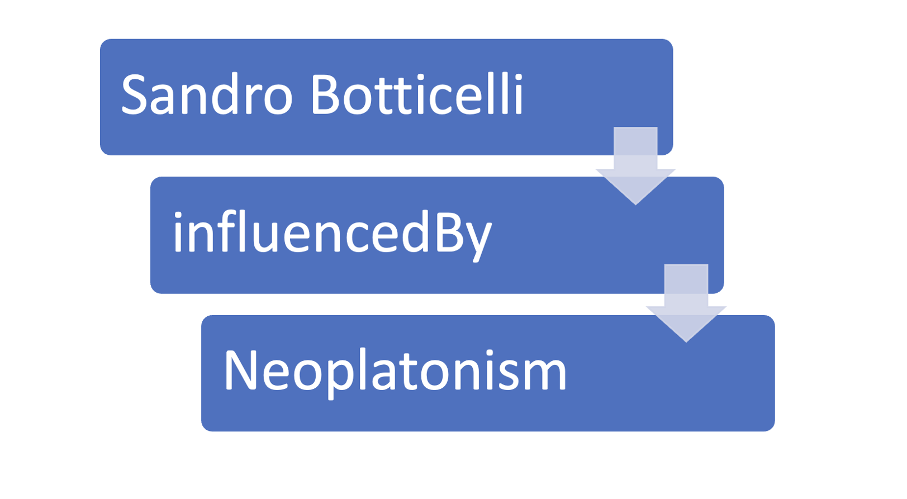

Methodology
This project follows the Project 1 track defined in the KE4H course: enriching a knowledge graph through SPARQL exploration, gap identification and proposed RDF triples. The methodology combines graph-based evidence with LLM-assisted analysis.

Tools
- ArCo SPARQL endpoint — querying the live knowledge graph
- ArCo ontology documentation — identifying classes and properties (Core, Context Description, Catalogue)
- ChatGPT, Claude, Gemini — LLM comparison and prompting experiments
- GitHub Pages — publication of this report
Methodological steps
- Topic selection — Sandro Botticelli within ArCo (Topic)
- SPARQL exploration — discovery, direct RDF description, structured vs implicit information (SPARQL)
- Gap identification — compare SPARQL results with art historical context; LLM-assisted analysis (Knowledge Gaps, LLM Prompts)
- Ontology enrichment — propose triples using ArCo properties and SPARQL CONSTRUCT (RDF Enrichment)
- Validation — future queries that would become possible after enrichment (Validation)
- Evaluation — KG-only, LLM-only and hybrid approaches (Evaluation)
How the gap was identified
The gap was identified in two complementary ways. First, SPARQL queries compared
structured relations of the anchor resource (e.g. a-cd:hasSubject)
with implicit mentions of philosophical entities in labels of resources linked through
rdfs:seeAlso (see
Query 4).
Second, three LLMs were prompted to suggest contextual information commonly discussed in
art history but absent from typical catalogue representations.
Approaches tested
- KG-only — SPARQL queries on ArCo without LLM input
- LLM-only — prompts without injecting SPARQL subgraphs
- Hybrid — SPARQL results inform LLM prompts; LLM suggestions checked against ArCo and scholarly sources